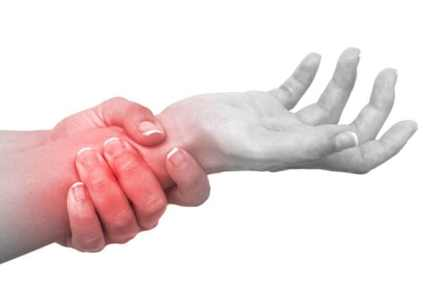
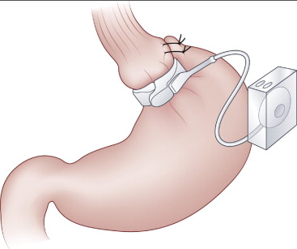
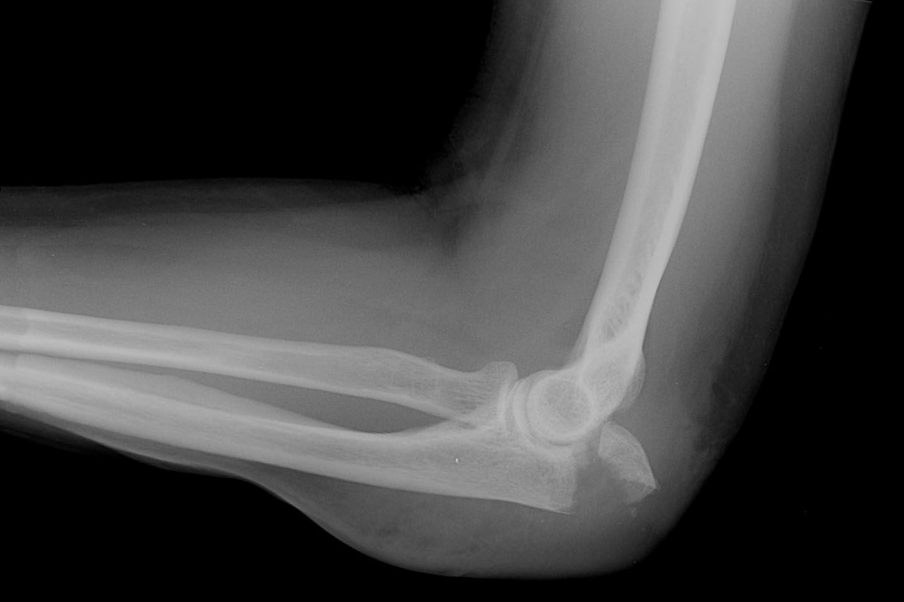
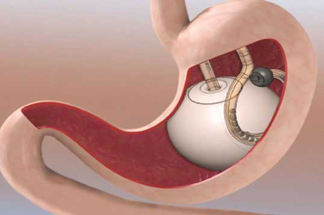
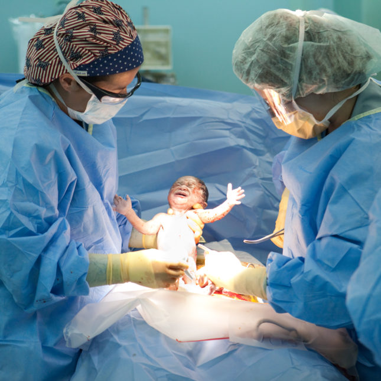
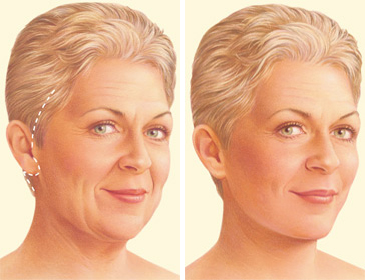
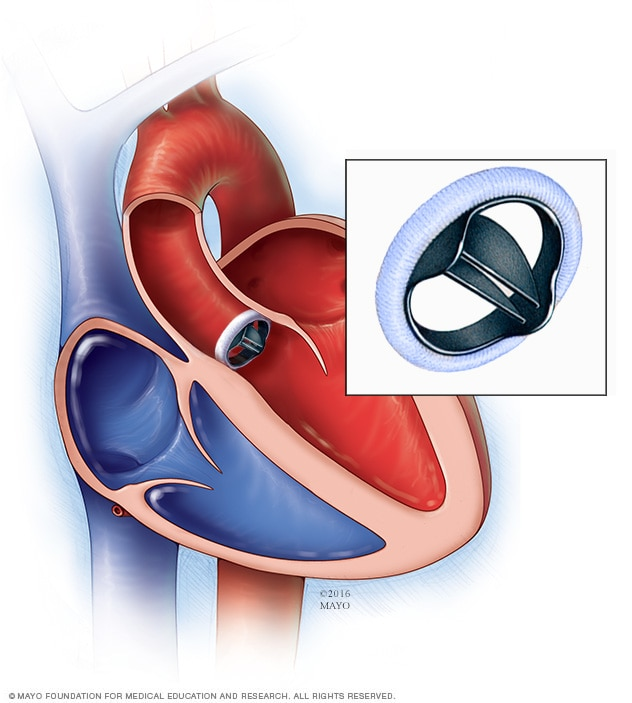

|  | De Quervain Surgery (ဒီ ကွာဗိန်း ခွဲစိတ်ခြင်း)အခြေခံအချက်များDe quervainခွဲစိတ်ခြင်းဆိုတာ ဘာလဲ။De quervain ရောဂါသည် သင်လက်ကောက်ဝတ်နှင့် လက်မတို့ကိုရွေ့လျားလိုက်လျှင် နာကျင်မှုကို ဖြစ်စေပြီး များသောအားဖြင့် လက်မအခြေတွင် ဖောင်းကြွနာကျင်နေတတ်ပါသည် |
|  | Laparoscopic Gastric Banding (မှန်ပြောင်းမှတဆင့် အစာအိမ်ကွင်းစည်းခြင်း)အခြေခံအချက်များမှန်ပြောင်းမှတဆင့် အစာအိမ်ကွင်းစည်းခြင်းဆိုတာ ဘာလဲအစာအိမ်ကွင်းစည်းခြင်းဟာ ကိုယ်အလေးချိန်လျှော့ချဖို့ ရေရှည်အထောက်အကူ ပြုပါတယ်။ ဘယ်လောက်ထိ အောင်မြင်မယ်ဆိုတာ အစားစားတဲ့ပုံစံအသစ်နဲ့ ပုံမှန်လေ့ကျင့်ခန်း ဘယ်လောက်လုပ်ဖြစ်တယ် ဆိုတဲ့ အပေါ် မူတည်ပါတယ်။ ဒီအစီအစဉ်မှာ အလျော့အတင်းလုပ်နိုင်တဲ့ ဆီလီကွန်ကွင်းကို အစာအိမ်အပေါ်ပိုင်းကို ထည့်သွင်းခြင်း ပါဝင်ပါတယ်။ ဒီလိုလုပ်ခြင်းအားဖြင့် အစာနည်းနည်းစားရုံနဲ့ ဗိုက်ပြည့်လာစေပါတယ်။ |
|
|
Abdominal Surgery For Crohn’s Disease (အစာအိမ်၊အူနံရံရောင်သောရောဂါခွဲစိတ်ကုသမှု)အစာအိမ်အူလမ်းကြောင်းနံရံရောင်ရမ်းသော Crohn ရောဂါအတွက် ခွဲစိတ်ကုသမှု ဆိုတာဘာလဲ။အစာအိမ်အူလမ်းကြောင်းနံရံရောင်ရမ်းသော Crohn ရောဂါအတွက် ခွဲစိတ်ကုသမှု ကို ရောဂါလက္ခဏာတွေသက်သာစေဖို့ ပြုလုပ်ကြတာဖြစ်ပါတယ်။ ဒီခွဲစိတ်မှုမှာတော့ အစာခြေလမ်းကြောင်းရဲ့ အစိတ်အပိုင်းတွေကို ဖယ်ရှားခြင်း၊ ပြောင်းလဲခြင်းတွေ ပါဝင်ပါတယ်။ ခွဲစိတ်မှုကို ဆေးကုသမှုနဲ့ အခြားကုသမှုတွေ မအောင်မြင်ရင် အသုံးပြုနိုင်ပါတယ်။ |
|  | Elbow Replacement (တံတောင်ဆစ်အစားထိုးခြင်း)တံတောင်ဆစ်အစားထိုးခြင်းဆိုတာဘာလဲ။တံတောင်ဆစ်အစားထိုးခြင်းကိုအဆစ်ရောင်တဲ့ လူနာတွေကုသဖို့အတွက် အသုံးပြုပါတယ်။ အဆစ်မှာနာကျင်မှု ပြင်းထန်နေရင်၊ တောင့်တင်းနေပြီး လှုပ်ရှားနိုင်စွမ်းမရှိရင် တံတောင်ဆစ်အစားထိုးခြင်းဟာ အသုံးဝင်ပါတယ်။ နာကျင်မှုကိုသက်သာစေပြီး လှုပ်ရှားမှု လွယ်ကူစေပါတယ်။ |
|  | Gastric Balloon Insertion (အစာအိမ်တွင်း ပူဖောင်းထည့်ခြင်း)အဓိပ္ပါယ်ဖွင့်ဆိုချက်အစာအိမ်တွင်း ပူဖောင်းထည့်ခြင်းဆိုတာ ဘာလဲအစာအိမ်တွင်း ပူဖောင်းထည့်ခြင်းဆိုတာဟာ ကိုယ်အလေးချိန်လျှော့ချဖို့ ရေရှည်အထောက်အကူပြုတဲ့ နည်းလမ်းတခု ဖြစ်ပါတယ်။ အစားလျှော့စားခြင်း၊ စားသောက်မှုပုံစံပြောင်းလဲခြင်းနဲ့ ပုံမှန်လေ့ကျင့်ခန်း လုပ်ခြင်းဟာ ကိုယ်အလေးချိန်ကျဖို့ မတတ်နိုင်တဲ့အခါ ဒီနည်းကို အသုံးပြုပါတယ်။ |
|  | Caesarean Section (ဗိုက်ခွဲမွေးဖွားခြင်း)အခြေခံအကြောင်းအရာများဗိုက်ခွဲမွေးဖွားခြင်း (C-Section) ဆိုတာဘာလဲဗိုက်ခွဲမွေးဖွားခြင်း (C-Section)ဆိုတာ ဝမ်းဗိုက်ကို ခွဲစိတ်ခြင်းအားဖြင့် ကလေးမွေးဖွားစေတဲ့ ခွဲစိတ်မှု တခုပဲ ဖြစ်ပါတယ်။ |
|  | Facelift Surgery (မျက်နှာမတင်ပြုပြင်ခွဲစိတ်ခြင်း)အဓိပ္ပါယ်ဖွင့်ဆိုချက်မျက်နှာမတင်ပြုပြင်ခွဲစိတ်ခြင်းဆိုတာ ဘာလဲ။မျက်နှာမတင်ပြုပြင်ခွဲစိတ်ခြင်းကို ဆေးပညာအရ rhytidectomy ဟုခေါ်ပြီး ငယ်ရွယ်သည့်မျက်နှာပုံစံထင်ရရန် ပြုပြင်ခွဲစိတ်ခြင်းဖြစ်သည်။ ဤနည်းလမ်းသည် သင့်မျက်နှာနှင့် လည်ပင်းမှတစ်ရှူးပျော့များအား ဆွဲဆန်မတင့်လိုက်ခြင်းဖြစ်သည်။ ဖြစ်နိုင်သည့်ရလဒ်ကိုသာ မျှော်လင့်ရန်လိုအပ်ပြီး ဒီခွဲစိတ်မှုကိုရွေးချယ်ဖို့ရန်အတွက် သေချာစဉ်းစားသင့်ပါသည်။ |
|
|
Abdominal Hysterectomy Surgery (ဝမ်းဗိုက်မှတစ်ဆင့်သားအိမ်ထုတ်သော ခွဲစိတ်မှု)Abdominal hysterectomy surgery ဆိုတာဘာလဲ။ဒီခွဲစိတ်မှုဟာ ဝမ်းဗိုက်ပေါ်မှာ ဓါးရာပေးပြီး သားအိမ်ကို အကုန် (သို့) တစ်စိတ်တစ်ပိုင်း ထုတ်တဲ့ ခွဲစိတ်မှုဖြစ်ပါတယ်။ ခွဲစိတ်နေစဉ်မှာ သင့်ဆရာဝန်ဟာ လိုအပ်တယ်လို့ ယူဆရင် သားအိမ်နဲ့ မမျိုးဥအိမ်ကို ထုတ်ယူနိုင်ပါတယ်။ |

|
Abscess Surgery (ပြည်တည်နာခွဲစိတ်ကုသမှု)အဓိပ္ပါယ်ဖွင့်ဆိုချက်Abscess Surgery (ပြည်တည်နာခွဲစိတ်ကုသမှု) ကဘာလဲ။ပြည်တည်နာခွဲစိတ်မှု ဟာ ပြည်တည်နေသော အနာကို ဖယ်ရှားတဲ့ ခွဲစိတ်မှုဖြစ်ပါတယ်။ ပြည်တည်နာဆိုတာဟာ တစ်ရှူးနံရံ ပတ်ပတ်လည်မှာရှိပြီး အလယ်မှာ ပြည်တွေ စုပြုံနေတဲ့ အနာတစ်ခုဖြစ်ပါတယ်။ |
|  | Aortic Valve Replacement (နှလုံးအဆို့ရှင် အစားထိုးကုသခြင်း)အဓိပ္ပါယ်ဖွင့်ဆိုချက်Aortic Valve Replacement (နှလုံးအဆို့ရှင် အစားထိုးကုသခြင်း ) ကဘာလဲ။နှလုံးအဆို့ရှင်မကောင်းသောရောဂါသည် နာကျင်ခြင်း၊ အသက်ရှူရခက်ခြင်း၊ နှင့် သေဆုံးခြင်းထိတိုင်အောင် ဖြစ်နိုင်ပါသည်။ နှလုံးအဆို့ရှင်ကို အစားထိုးကုသခြင်းဖြင့် သင်၏ နာကျင်မှုကို သက်သာစေပြီး သင့်ကို ပို၍အသက်ရှည်စွာနေထိုင်နိုင်ရစေသည်။ |